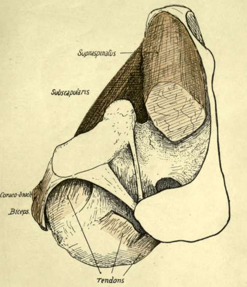
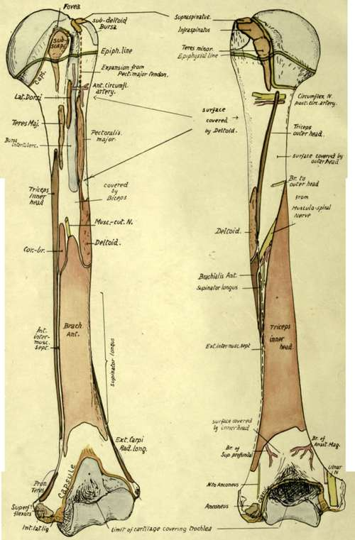

Humerus. Part 2
Description
This section is from the book "The Anatomy Of The Human Skeleton", by J. Ernest Frazer. Also available from Amazon: The anatomy of the human skeleton.
Humerus. Part 2
The want of security evident in such a shallow articulation is a consequence of the necessity for having free movement in all directions, and the two bones cannot be firmly held together by ligaments, for this would restrict the range of motion. So the security of the joint must depend on the surrounding muscles, and the closer these are attached to the articular surfaces, and especially to the more movable one, the more efficiently can they perform the function of bands which are always tense in any position or action of the joint. This is probably the reason why we find strong tendons grouped closely round three surfaces of the capsule and inserted into the humerus immediately outside the anatomical neck to which the capsule is attached (see Fig. 62).
They are the Subscapularis, Supraspinatus, Infraspinatus, and Teres minor : the two spinatus muscles are inserted into their corresponding facets, but the other two extend beyond their evident markings on the bone, as usually seen.
The Teres minor (Fig. 63) is inserted by tendon on its facet, but in addition is attached by muscle fibre to the shaft for J-f inch below this, thus not causing a secondary marking here. The two modes of insertion probably depend on the fact that the portion on the tuberosity, being raised, is under pressure from the Deltoid, whereas that below the prominence escapes such pressure : occasionally the lower portion is also tendinous, and so there is occasionally a marking for it on the bone.
Fig. 62.-View from above of the left shoulder-joint, exposed by removal of part of the Supraspinatus. The cut tendon of this muscle is seen on the humerus, and just in front of it the coraco-humeral ligament makes a prominent band between it and the tendon of Subscapularis ; the edge of this band overhangs the latter tendon, but the ligament is directly continuous behind with the capsule under cover of Supraspinatus. The Supraspinatus plays under acromion and coraco-acromial bands (especially when the humerus is inverted), with a bursa interposed. For attachments of ligaments, see Fig. 57, 4. observe that the short head of Biceps* is in part continuous with the anterior coraco-acromial band, and it and the Coraco-brachialis are separated from the capsule by Subscapularis.
Fig 63.-Anterior and posterior views of left humerus, showing muscular attachments and relations of the bone. Compare with Figs. 65, 67, and 68.
The insertion of the Subscapularis also comes down well below the small tuberosity on to the shaft, and may here be either muscular or tendinous, with absence or presence of a corresponding marking. Bearing these facts in mind, it is easy to show the hne of capsular attachment on the bone (Figs. 63 and 68). Starting behind, it passes down close to the inner side of the three facets, so leaving the neighbourhood of the anatomical neck as it runs along the Teres minor. It still passes down along the insertion of Teres minor, thus reaching the level of the surgical neck, but 'near the lower end of this insertion the line turns suddenly inwards and forwards along the surgical neck and inclines upwards to come again on to the anatomical neck internal to the Subscapularis on the small tuberosity : it sometimes reaches the lower part of this insertion. So the hne passes up to the Supraspinatus facet, but it should be noticed that the inclusion of the coraco-humeral hgament in the capsule has led to the hne of humeral attachment of capsule being extended outward on both tuberosities at each side of the upper end of the bicipital groove : thus the coraco-humeral ligament is visible between the Supraspinous and Subscapular tendons (Fig. 62) and covers the issuing tendon of the Biceps, being strengthened here by the transverse hgament.
It is not quite apparent why the capsule and muscles should leave their association with the anatomical neck in the lower part, or why there should be no strengthening tendon below the joint as on the other aspects, but probably all these modifications are connected with the marked downward displacement of the head that occurs when the arm is abducted : at any rate, the lower part of the joint thus becomes its weak point mechanically, and when the arm is abducted the head of the humerus can be fairly easily dislocated downwards, the only resistance being offered by the Supraspinatus tendon. The long head of the Triceps, however, provides some support when the arm is abducted.
Summing up these observations on the region of the head of the bone, we can obtain a conception of the immediate relations of the capsule (Figs. 57 and 62). It has Subscapularis tendon in front (separating it from Coraco-brachialis, etc.), Supraspinatus above (separating it from acromion and Deltoid and corresponding bursas), Infraspinatus and Teres minor behind (separating it from Deltoid). Below it the circumflex nerve and vessels run back close to the neck of the bone, in contact with the lower margins of Subscapularis and Teres minor: the long head of Triceps is below and internal, but not in immediate relation, except when the arm is abducted.
Articulate the bones and observe that the greater tuberosity projects (Fig. 51) far out beyond the level of the acromion. This imphes that the tendon of the Supraspinatus passes to its insertion under cover of the Deltoid, and the " subacromial bursa " which intervenes between the tendon and the acromion becomes " subdeltoid " as it covers it further out, to extend beyond it on to the outer side of the upper and more prominent part of the tuberosity.
It is a matter of some practical interest to be able to place the upper epiphysial hne. This is the " growing end " of the bone, and the upper epiphysis is a compound of three centres, one for each tuberosity and one for the head : these appear within the first few years of life and coalesce at about six years. The epiphysis formed in this way can be marked out as in the figure (Fig. 63), the hne passing just below the facets for Teres minor and Subscapularis and just touching the lower hp of the articular surface. It is apparent that the lower third or more of the capsule is attached to the diaphysis, the remainder being on the epiphysis.
Continue to:
- prev: Humerus
- Table of Contents
- next: Humerus. Part 3